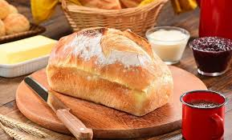

PÃO CASEIRO

Informações gerais
Aquele pão caseiro delicioso com gostinho de
casa de vó.
Ingredientes
- 1 kg de farinha de trigo
- 1 e 1/2 xícara de leite morno
- 1/2 xícara de água morna
- 1/2 xícara de óleo
- 4 colheres (sopa) de açúcar
- 1 colher (sopa) de sal
- 2 ovos
- 30g de fermento biológico fresco
Modo de preparo
- Em uma tigela, dissolva o fermento fresco no açúcar e
acrescente o sal, os ingredientes líquidos, os ovos
e misture bem.
- Acrescente a farinha aos poucos até formar uma maça macia.
- Sove bem a massa.
- Deixe a massa crescer e descansar por aproximadamente 1 hora.
- Divida a massa, enrole e coloque nas formas.
- Aguarde crescer até dobrar de volume.
- Leve ao forno médio (200ºC), preaquecido, por aproximadamente
30 a 40 minutos
- Retire do forno e pincele leite ou água para
dar maciez na casca